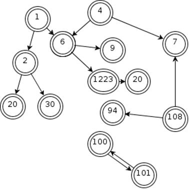
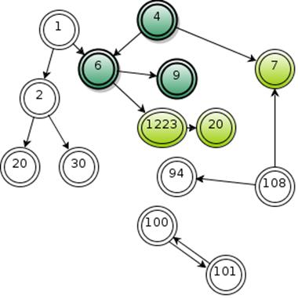

Javatopia Garbage Collector Wars
Statistics: [general]
Sector map:
System root map:
Graph image:
You are one of the environmental companies and you have cars. There is one car per sector. You control your cars from a simple REST interface..
|
URL |
|
|
Method |
GET |
|
Returns |
200 OK & simple text file (see below) |
|
404 Not Found if there is no such sector (id must be between 1 and 10) |
The result is a simple text file with the object connection in the following format:
A1 B1
A2 B2
A3 B3
...
AN BN
For example:
1 2
1 6
2 20
2 30
4 6
6 9
6 1223
1223 20
4 7
108 94
108 7
100 101
101 100
This will correspond to the following object structure:

|
URL |
|
|
Method |
GET |
|
Returns |
200 OK & simple text file (see below) |
|
404 Not Found if there is no such sector (id must be between 1 and 10) |
The result is a simple text file with the system roots in the following format:
R1
R2
...
RM
For example:
6
4
...
9
If we continue the previous example this will produce the following graph:

In this example only the objects with white background will be collectable.
|
URL |
http://server:port/api/sector/[id]/company/[your-company-name]/trajectory |
|
Method |
POST |
|
Parameter |
trajectory: a1 a2 ... an - a valid white trajectory (see below) |
|
|
200 OK. The objects from your trajectory will be collected if possible. Your garbage car will need 1 time unit to go trough the trajectory so the request will return result after about 1 second. |
|
418 ERROR (I'm a teapot - RFC 2324) - your request was incorrect, invalid "white trajectory" (see below). Too bad - you broke the car and you needed to wait 10 time units before repairing it. The error is returned after 10 second delay.
404 ERROR (Not Found) - if there is no such sector |
The "white trajectory" is a path only trough the objects, suitable for garbage collection. Each two neighbor objects in the white trajectory should be connected from left to right. In the example we are working with, the following white trajectories are valid:
1 2 20
1 2 30
1
30
108 94
100 101
101 100
The following trajectories are NOT valid white trajectories:
20 2 1
1 6
4
1223 20
The white trajectories are compared against the initial map, not against the current state. For example if the object 2 is already collected by some other player, the request 1, 2, 30 will still be a valid "white trajectory" - as result 1 and 30 will be collected.
Example requests:
POST: http://server:port/api/sector/4/company/Ditz/trajectory
trajectory: 1 2 20
POST: http://server:port/api/sector/4/company/Titan/trajectory
trajectory=1